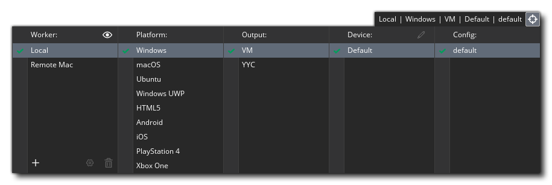
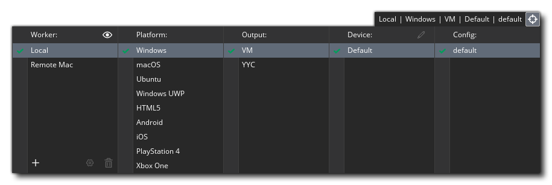
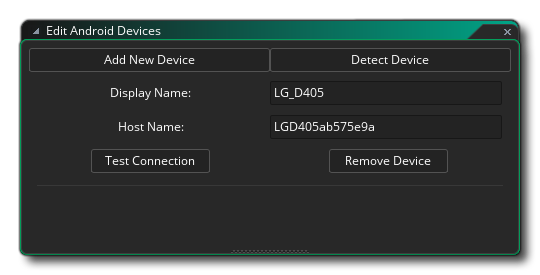

Compiler votre jeu peut signifier deux choses: le compiler pour le tester, ou le compiler pour créer un paquet d'actifs pour une plate-forme cible spécifique. Vous pouvez tester votre jeu en appuyant simplement sur le bouton Lecture  en haut de l'EDI, qui lancera le jeu pour tester en utilisant la cible spécifiée. Vous pouvez également lancer le jeu en mode débogage en testant avec le bouton Déboguer
en haut de l'EDI, qui lancera le jeu pour tester en utilisant la cible spécifiée. Vous pouvez également lancer le jeu en mode débogage en testant avec le bouton Déboguer  . Cela lancera le jeu, mais ouvrira également la fenêtre de débogage, où vous pourrez surveiller comment votre jeu se comporte et déboguer les problèmes (voir la section sur le débogage pour plus d'informations).
. Cela lancera le jeu, mais ouvrira également la fenêtre de débogage, où vous pourrez surveiller comment votre jeu se comporte et déboguer les problèmes (voir la section sur le débogage pour plus d'informations).
Par défaut, GameMaker Studio 2 sera exécuté et débogué à l'aide de la machine virtuelle intégrée (machine virtuelle), qui est plus ou moins identique à celle utilisée sur le système d'exploitation de bureau utilisé. Cependant, GameMaker Studio 2 est un moteur multiplateforme et vous pouvez tester, déboguer et compiler des paquets d'actifs de vos projets sur un certain nombre de plates-formes cibles différentes (les plates-formes exactes disponibles dépendront des détails de votre licence). Pour changer la plate-forme cible actuelle, vous pouvez cliquer sur le bouton Cibles  pour ouvrir la fenêtre Targets, qui ressemblera à ceci (les détails exacts varieront en fonction de votre type de licence): 
pour ouvrir la fenêtre Targets, qui ressemblera à ceci (les détails exacts varieront en fonction de votre type de licence): 
En haut, à côté du bouton Cibles, vous avez les paramètres actuels qui vous indiquent la plate-forme et les paramètres spécifiques utilisés, puis le reste de la fenêtre est occupé avec les détails et les options pour toutes les cibles disponibles que vous pouvez sélectionnez pour utiliser à la place. Chaque section de cette fenêtre est expliquée ci-dessous:
La première colonne du Gestionnaire de cible est dédiée aux travailleurs à distance dont vous disposez. Pour commencer, vous n'aurez qu'une seule machine "locale" répertoriée ici, c'est-à-dire la machine sur laquelle GameMaker Studio 2 est installé, mais vous pouvez également configurer une machine distante à utiliser. Lorsqu'un travailleur à distance a été configuré, vous serez alors en mesure de le sélectionner dans la liste ici, et l' ont construit vos projets plutôt que d' utiliser la machine hôte où GameMaker Studio 2 est installé.
Pour plus d'informations sur la configuration et l'utilisation des travailleurs à distance, veuillez consulter la section ci-dessous:
Cette section répertorie toutes les plates-formes cibles disponibles. Le contenu de cette liste variera en fonction de la licence que vous avez, mais aura toujours au moins la cible "Test". Pour sélectionner une cible, cliquez simplement
dessus. Cela mettra à jour le reste des fenêtres d'options pour afficher différents détails en fonction de la plate-forme sélectionnée.
Chaque plate-forme cible peut avoir un ou plusieurs formats de sortie, les principaux étant:
- VM: La cible VM (Virtual Machine) utilise un coureur générique pour chaque plateforme, puis interprète le code de votre jeu. En général, cette option est utilisée pour les tests en raison de ses temps de construction plus rapides, mais elle n'offre pas les mêmes performances que l'offre YYC (si disponible). Vous pouvez l'utiliser pour compiler des jeux plus petits ou des jeux où la performance ne sera jamais un problème, cependant.
- YYC: Le YCC ( YoYo compilateur) prend la normale GameMaker Studio 2 sortie et compile en code natif pour la plate - forme cible, « stripping out » fonctions non nécessaires et l' exécution d' une foule d'autres techniques d'optimisation pour créer une plus petite et une meilleure performance exécutable. Cela peut augmenter les performances de vos jeux d'au moins deux ou trois fois, en particulier sur les jeux logiques lourds, idéaux pour les jeux plus volumineux ou gourmands en ressources. La compilation peut prendre plus de temps et vous devez toujours vider le cache du compilateur avant de créer un package d'actifs complet pour une plate-forme cible. Notez que la cible YYC peut nécessiter l'installation d'outils supplémentaires pour la plate-forme sélectionnée, sinon cela ne fonctionnera pas - vous pouvez trouver plus d'informations à ce sujet dans le centre d'aide de YoYo Games ainsi que sur les pages de préférences individuelles détaillées dans ce manuel.
- JavaScript: la cible JavaScript ne sera disponible que pour quelques cibles, comme la cible HTML5, et définit le jeu à compiler en JavaScript pur.
Certaines plates-formes (comme iOS ou Android ) vous permettent d'associer un ou plusieurs appareils à GameMaker Studio 2 afin que les jeux puissent les compiler de manière sélective. Initialement, la liste des appareils sera vide et vous devez cliquer
pour ouvrir l' éditeur de périphérique:
Vous pouvez ici ajouter de nouveaux appareils et tester GameMaker Studio 2 pour une connexion à n'importe quel appareil pouvant être connecté. Le contenu exact de cette fenêtre dépendra des spécificités de la plate-forme (voir la section sur le Gestionnaire de périphériques pour les détails exacts pour une plateforme donnée). Une fois qu'un appareil a été trouvé ou ajouté, il sera alors affiché dans cette fenêtre, comme dans cette image d'exemple pour Android: 
La procédure exacte et les conditions requises pour la configuration des périphériques et les problèmes de dépannage peuvent être trouvées dans la section appropriée de la base de connaissances de GameMaker Studio 2.
Comme expliqué dans la section Configurations, vous pouvez stocker certains détails pour la compilation de votre jeu en tant que Configs. Cette section de la fenêtre Cibles vous permet de faire en GameMaker Studio 2 que GameMaker Studio 2 sélectionne automatiquement une configuration spécifique pour une plate-forme cible spécifique.

Création d'un package exécutable final
Compiler votre projet de jeu sur n'importe quelle plateforme cible nécessitera que vous ayez configuré les bons outils de construction (voir ici ) et aussi rempli les préférences de plateforme appropriées. Une fois que vous avez fait cela, vous pouvez simplement cliquer sur le bouton Créer un exécutable dans l'IDE pour démarrer la compilation du compilateur ou sélectionnez Créer un exécutable dans le menu Générer. L'une ou l'autre option ouvrira une fenêtre d'explorateur de fichiers dans laquelle vous pourrez donner le nom final que vous souhaitez utiliser pour votre paquet de jeu avant de cliquer sur Enregistrer pour démarrer le processus de compilation et de construction. Une fois que vous avez fait cela, les fichiers nécessaires seront générés afin que vous puissiez le distribuer comme vous le souhaitez.
Chaque option cible enregistre dans un format spécifique à la plate-forme, répertorié ci-dessous:
- Windows - La compilation pour le système d'exploitation Windows général demandera d'abord de choisir entre un programme d' installation ou un paquet Zip, où le programme d'installation sera un exécutable unique qui installera votre jeu, et le fichier Zip sera un fichier compressé au format zip avec tous vos fichiers de jeu stockés dans (les fichiers devront être extraits pour que le jeu s'exécute).
 Si vous cochez la case Mémoriser l'option d'emballage, GameMaker Studio 2 se souviendra du choix pour toutes les compilations futures (ceci peut être réinitialisé ou modifié à partir des Préférences de Windows ). Vous pouvez en savoir plus sur le Centre d'aide YoYo Games
Si vous cochez la case Mémoriser l'option d'emballage, GameMaker Studio 2 se souviendra du choix pour toutes les compilations futures (ceci peut être réinitialisé ou modifié à partir des Préférences de Windows ). Vous pouvez en savoir plus sur le Centre d'aide YoYo Games - Les applications Ubuntu (Linux) - Ubuntu (Linux) peuvent être compilées *.zip des dossiers. Vous pouvez en savoir plus sur le Centre d'aide YoYo Games.
- HTML5 - Si vous avez choisi de créer HTML5, un index.html fichier (c'est le nom par défaut, mais vous pouvez donner votre propre nom dans les préférences de la plate-forme) avec un dossier contenant vos fichiers de jeux sera créé et enregistré à l'emplacement spécifié. Pour que votre jeu fonctionne, vous aurez besoin de les télécharger sur un serveur. le index.html peut également être personnalisé pour afficher votre jeu avec une couleur de fond différente, ou à une position différente etc... mais une connaissance de HTML est nécessaire pour cela, et vous pouvez également spécifier votre propre fichier d'index personnalisé lorsque vous construisez le paquet (voir les options de jeu HTML5 ). Vous pouvez en savoir plus sur le Centre d'aide YoYo Games.
- Android - Pour Android appareils Android, un seul *.apk le fichier sera généré et pourra être utilisé directement sur n'importe quel appareil Android ou téléchargé dans les magasins Google Play ou Amazon (ou tout autre site acceptant Android applications Android ). Vous pouvez en savoir plus sur le Centre d'aide YoYo Games.
- iOS - Compiler vers iOS va créer un xarchive fichier qui est ensuite utilisé dans Xtools pour créer le package iOS final. Notez que pour compiler pour iOS, vous aurez besoin d'un ordinateur Apple Mac fonctionnant sous OSX ou supérieur, ainsi que des certificats et autorisations appropriés. Vous pouvez en savoir plus sur le Centre d'aide YoYo Games.
- Mac OS - La cible Mac OS va construire soit un *.app fichier ou un *.pkg fichier, selon que vous souhaitez le télécharger plus tard sur le Mac App Store ou non. Comme avec iOS, vous aurez besoin d'un ordinateur Apple Mac fonctionnant sous OSX ou supérieur, ainsi que des certificats et autorisations appropriés. Vous pouvez en savoir plus sur le Centre d'aide YoYo Games.
- Windows UWP - Pour Windows UWP, GameMaker Studio 2 crée un *.appx paquet qui peut ensuite être téléchargé sur le Windows Store. Lorsque vous cliquez sur le bouton Créer un exécutable, vous serez invité à indiquer à GameMaker Studio 2 type de paquet que vous souhaitez créer (soit pour les architectures ARM, x64 ou x86), et vous devez choisir celui qui cible les périphériques que votre jeu va être soutenu sur:
 Si vous cochez la case " For Package For Store Upload", le package final créé sera un .appxupload fichier, qui est ce que Microsoft spécifie devrait être utilisé pour soumettre des applications à leur magasin, comme expliqué dans cet article ici. Notez également que vous pouvez définir l'option de conditionnement par défaut dans les Préférences UWP ) afin que GameMaker Studio 2 mémorise le choix pour toutes les compilations futures (ce qui signifie que cette fenêtre d'options ne sera pas affichée). Vous pouvez en savoir plus sur la configuration et la compilation sur la plate-forme UWP à partir du Centre d'aide de YoYo Games.
Si vous cochez la case " For Package For Store Upload", le package final créé sera un .appxupload fichier, qui est ce que Microsoft spécifie devrait être utilisé pour soumettre des applications à leur magasin, comme expliqué dans cet article ici. Notez également que vous pouvez définir l'option de conditionnement par défaut dans les Préférences UWP ) afin que GameMaker Studio 2 mémorise le choix pour toutes les compilations futures (ce qui signifie que cette fenêtre d'options ne sera pas affichée). Vous pouvez en savoir plus sur la configuration et la compilation sur la plate-forme UWP à partir du Centre d'aide de YoYo Games.
Une fois que vous avez créé votre paquet d'actifs exécutable, vous pouvez le donner à d'autres personnes ou le placer sur votre site Web pour télécharger ou télécharger ces fichiers sur les différents services d'hébergement pour une distribution individuelle ou même en ligne (Google Play, iTunes ou MS Store) pour la distribution générale et la vente au détail.
Notez que vous êtes libre de distribuer les jeux que vous créez avec GameMaker Studio 2 comme vous le souhaitez, y compris en les vendant. Bien sûr, cela suppose que les sprites, les images et les sons que vous avez utilisés pour le faire peuvent être distribués ou vendus et que vous avez les droits légaux sur tous les assets, et suppose également que le jeu est conforme au CLUF de YoYo Games pour GameMaker Studio 2. Vous pouvez trouver le contrat de licence dans le dossier d'installation de GameMaker Studio 2, généralement " C:\Program Files\GameMaker Studio 2\Licence.txt ".